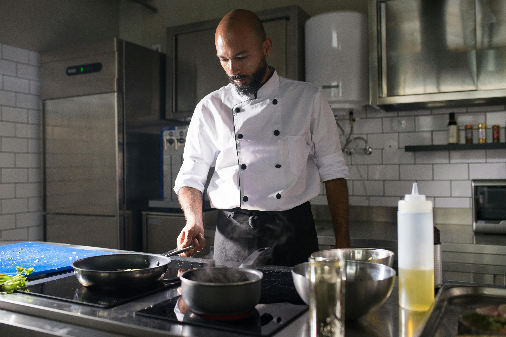

Notre Histoire
Depuis 2015, RESTFOOD s'est donné pour mission d'apporter le meilleur de la
cuisine locale et internationale a votre table. Dans un cadre raffiné, notre
équipe passionnée vous offre des plats faits maison, avec amour et créativité
Chez ROSA, nous croyon que chaque détail compte.
Tout a commencé avec une simple idée: offrir quelque chose de different.Une
expérience authentique, un retour aux vraie valeurs-celles de la qualité,du respect
et de lèngagement.
Année aprés années, nous avons grandi avec passion, entourés de personnes
talenteuses et de clients fidéles qui nous ont fait confiance.
Chaque produit, chaque service que nous proposons est le résultat dùn savoir-faire
précis et dùn amour du travail bien fait
Notre équipe est composée de passionnés qui partagent la meme vision: créer de la
valeur tout en restant humains.
Aujourd'hui, notre mission est simple:
"Offrir une qualité irréprochable"
"Rester a l'ecoute de vos besoins"
"Innover sans perdre notre ame"
Merci de faire partie de cette aventure avec nous.
Pour moi, chaque plat raconte une histoire. Trqvqiller ici, c'est plus que cuisiner:c'est
transmettre del'amour a travers chaque assiette.L'équipe est passionnée,les ingredients
sont soigneusement sélectionnés,et le respect du client est au coeur de tout ce que nous
- Chef David M.,Spécialiste des grillardes et des sauces traditionnelles

En tant que cheff,j'ai trouvédans ce restaurant un espace ou la créativité,
l'authenticité et l'excellence culinaire s'expriment pleinement.Chaque jours,je travaille
avec des produits frais et locaux pour créer des recettes qui font voyager nos clients des la
premiere bouché
- Cheffe Aissata N.,Experte en cuisine africaine et fusion moderne